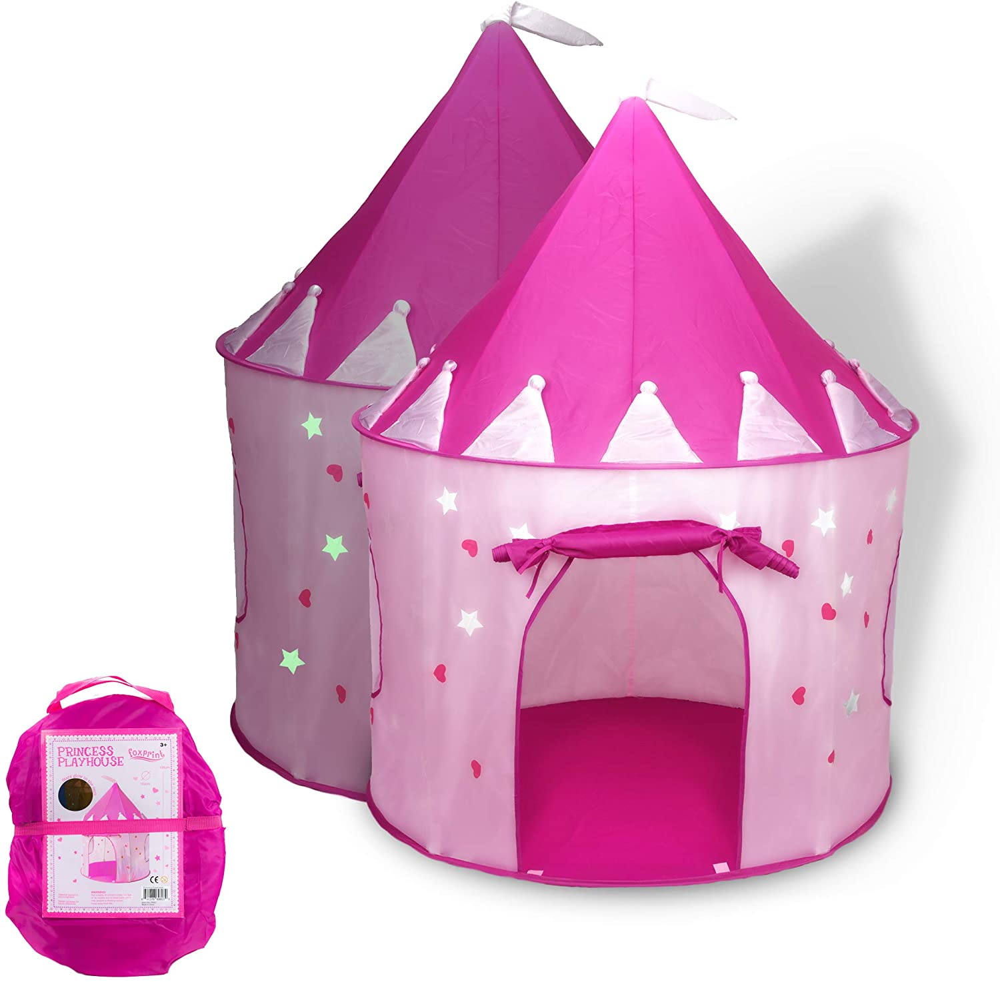

Can a 8 year old enjoy this
?
I'm 55 years old, and I need this in my life because I'm a god-damned princess who wants to have pretend tea parties in peace👸. I am positive that an 8-year-old would enjoy this, although she may not fully appreciate the true meaning of a portable "Room of One's Own" until she is an adult.
posted 3.5 years later
15 of 19 found this helpful
Will this work as a good cat litter box staircase?
→
Nice job of thinking outside the box the kind of small soul depends on the size of the cat I guess
Wouldn’t have the slightest idea
No.
I do believe it would.
Yes
Yes
Yes
Yes
Is the edge smooth where you put your lips to drink
?
What material are these glasses made of
→
Are these large enough to collect urine samples?
→
Does salt stick well to the rims, especially when primed with citrus juice?
→
Are the bottoms of these glasses concave so when upside down in the dishwasher, water remains in the bottoms?
→
Can a child easily hold these or are they too big around for little hands
→
My cat like to push my glassware over the counter onto my tile floor. The cups fall an average of 3ft.
Would these glasses survive the fall? →
Are these glasses "seam free" or is there a seam line running vertically down the glass?
→
What is the thickness of the rim? 1/8"? or more? as much as 3/16" or 1/4"?
Looking for a thin rim.
→
Are these buoyant or do they sink?
→
What happens if you put any of these acrylic glasses in the microwave?
every one says not to do it.
→
If i wrote on these with a sharpie, would it stay or smear off?
→
Just confirming is the edge smooth on the rim of the cups made in 2018? I am getting conflicting reviews.
→